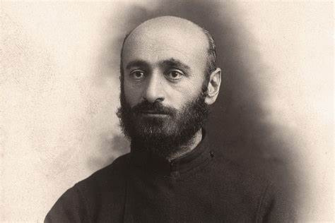
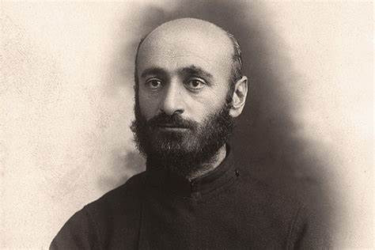
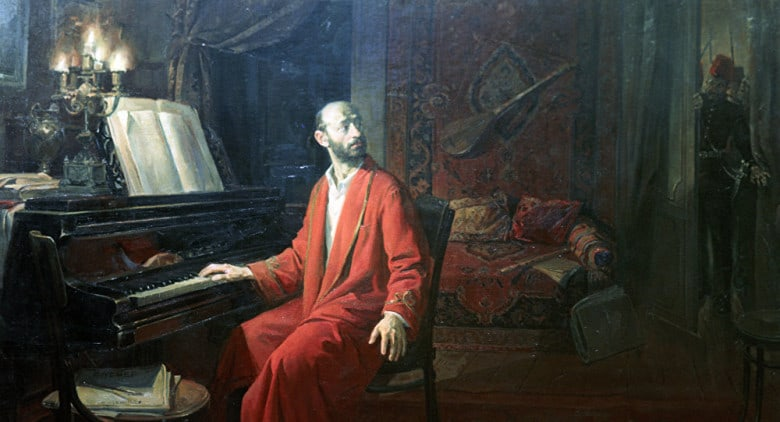
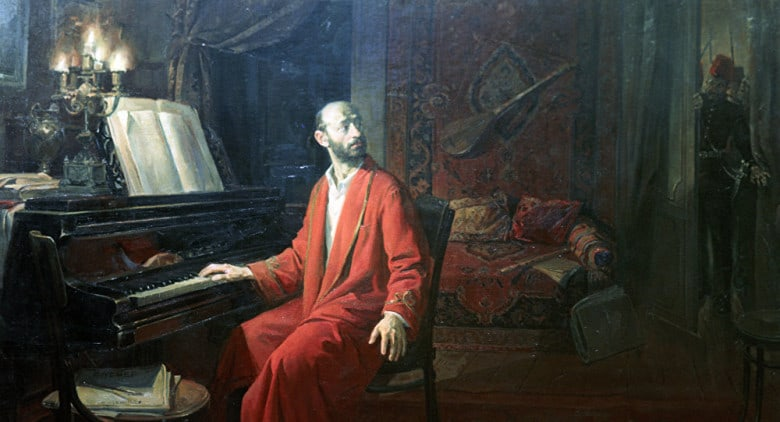
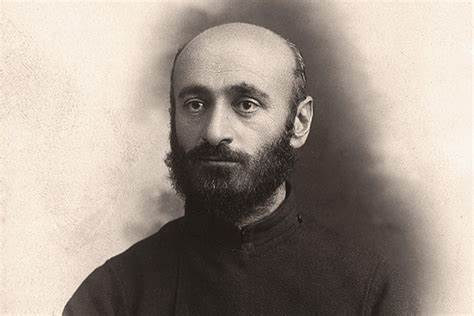
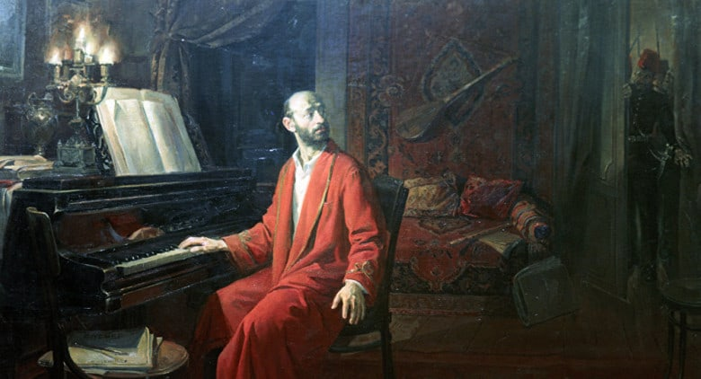

 


В 1955 году на могиле Комитаса был установлен памятник композитору работы скульптора Ара Арутюняна (Пантеон имени Комитаса).
В 1988 году был установлен памятник Комитасу в сквере Ереванской консерватории работы скульптора Ара Арутюняна.
В 2003 году был установлен памятник Комитасу в Париже по адресу Cours Albert 1, в сквере сад «Ереван».
В 2008 году был установлен монумент Комитасу в городе Квебек, посвящённый всем жертвам геноцида армян.
В 2015 году в Петербурге в Камском саду на Камской улице был открыт памятник Комитасу (скульптор Л. Бейбутян, архитектор М. Атоянц)[7].


Центральная площадь города Эчмиадзина названа в честь Комитаса.
Его именем назван один из главных проспектов Еревана.
Сквер имени Комитаса в Париже.
Именем Комитаса названа Ереванская государственная консерватория.
Имя Комитаса носит один из лучших концертных залов Еревана — Дом камерной музыки.
Созданный в 1924 году российско-армянский струнный квартет студентов Московской консерватории был в 1932 году назван именем Комитаса (Квартет имени Комитаса).
В 1996 году в Ереване открылось специализированное музыкальное издательство «Комитас».